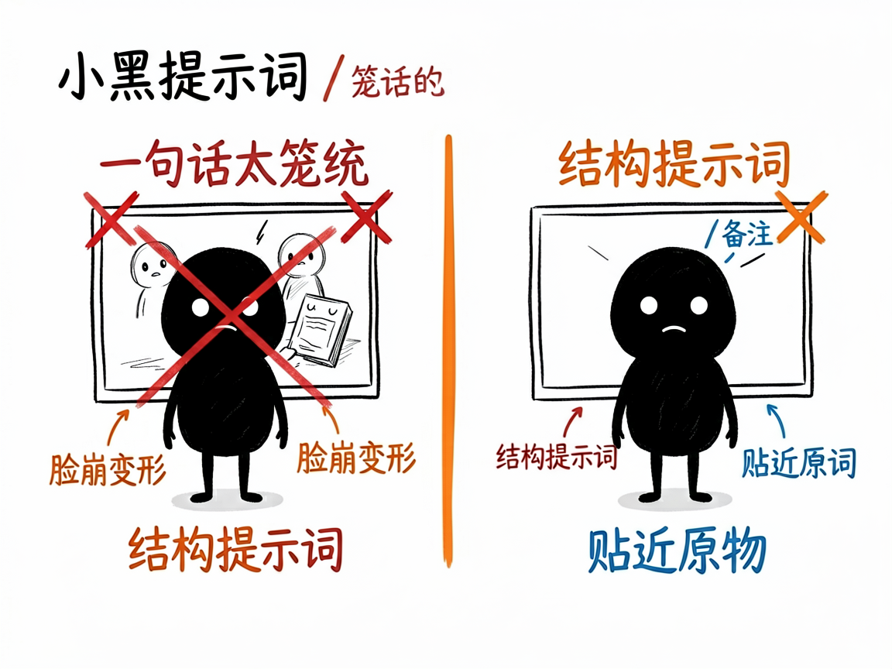
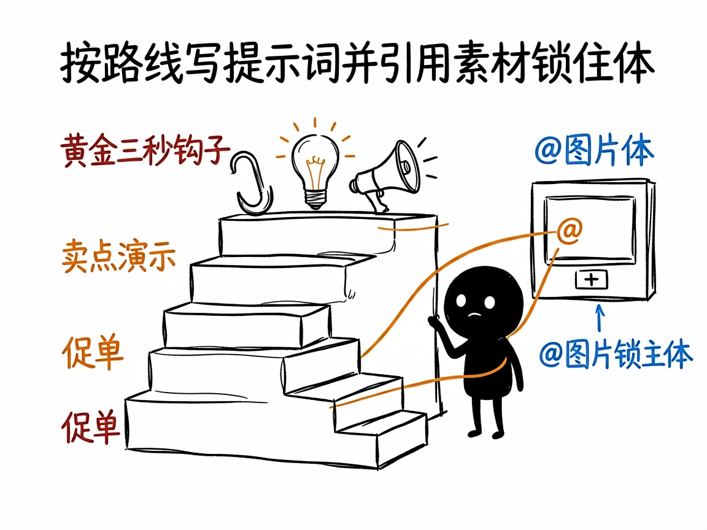

用即梦、豆包生成视频总翻车？问题往往不在模型，而在提示词太笼统。告诉它你想做什么，它还你一份可直接粘贴使用的完整分镜提示词。
人物脸崩、产品变形、镜头乱跳，往往是那句笼统的提示词惹的祸
AI 视频生成的质量上限，很大程度上由提示词决定。make-prompt-seedance2 把提示词按结构写细——基础参数、镜头语言、核心主体、商业场景、强制约束五大模块，并支持 @图片1 这类素材引用语法锁住主体，让生成结果更贴近你要的样子。
Seedance 2.0 分镜提示词助手 的六大能力
先看懂你上传的产品图：颜色、材质、形态直接写进提示词，让 AI 生成更贴近原物
自动判断该走通用创意、抖音带货、品牌广告片、真人感探店还是改已有视频路线
带货按黄金 3 秒钩子 + 卖点演示 + 促单结构；广告片追求电影级质感
支持 @图片1 作为首帧、@视频1 参考运镜，把你的图/视频喂给模型锁住主体
写好的提示词可直接粘贴到即梦、小云雀、豆包使用，无需改写
针对电商带货场景的钩子结构与强制约束库，专门提升完播和转化
小黑手绘风格插图


从输入到产出，一步到位
快速开始
git clone https://github.com/liangdabiao/make-prompt-seedance2.git # 放入 ~/.workbuddy/skills/make-prompt-seedance2/ 或 ~/.claude/skills/
在 codex / workbuddy 等 agent 中上传你的产品白底图或参考视频
例如：帮我做个抖音带货视频，要抓人、要讲卖点
按提示中的上传顺序和 @引用对应关系，粘贴到即梦生成
现代化技术组合
关于 Seedance 2.0 分镜提示词助手 的常见疑问